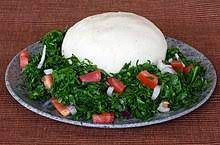

Unordered and Ordered List
Ugali Recipe

Ingridients and steps of Cooking ugali
Ingridients and tools
Unordered list
- Maize Flour
- Water
- Cooking Stick
- Sufuria
- Source of heat
- Placing plate
- Cooking
Steps of Cooking Ugali
Ordered list
- Place Sufuria on source of heat
- Add water to the Sufuria
- Heat water to boiling point of about 100 degrees
- Cooking oil
- Add at least 2 cups of maize flour
- Start Stirring till a paste is formed
- Continue adding Flour till paste hardens
- Start Shapping to desired shape
- Leave for approximately 10 minutes before turning
- When ready overturn it onto a plate
- Serve with desired Stew